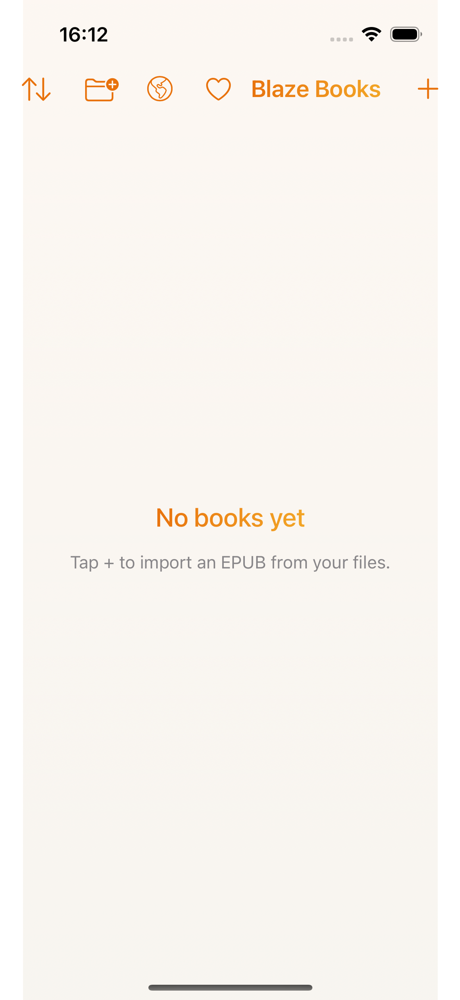
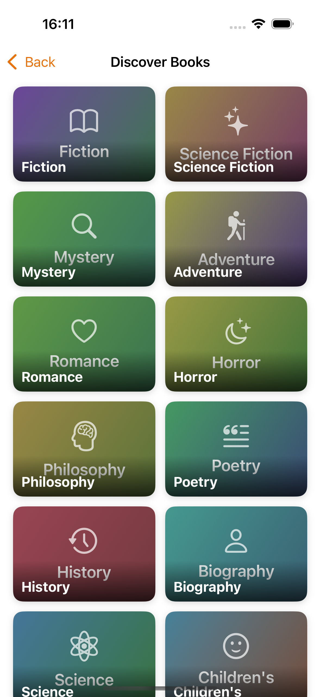
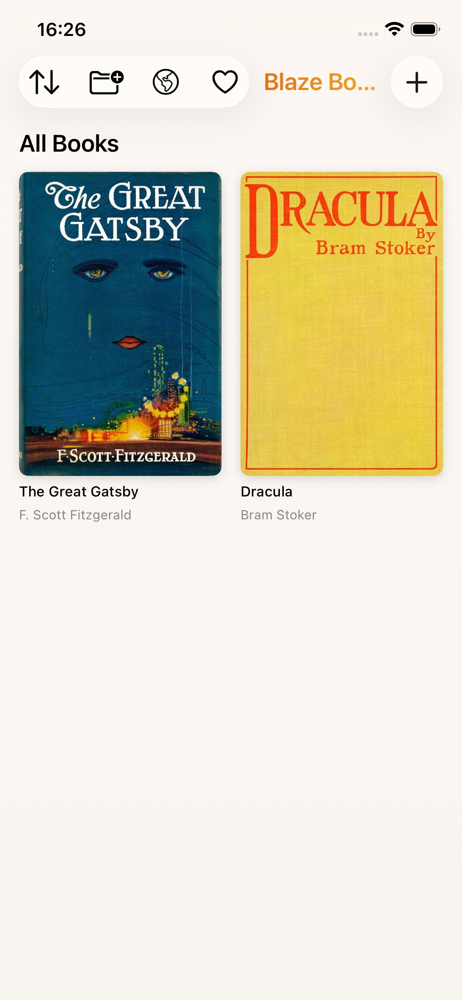
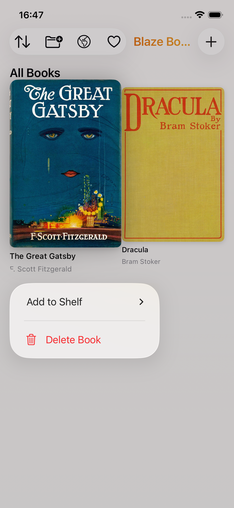
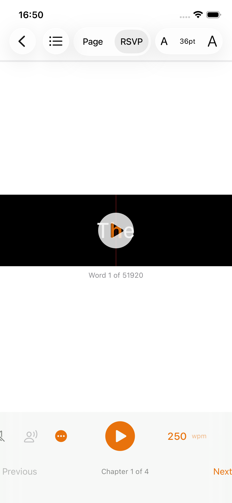
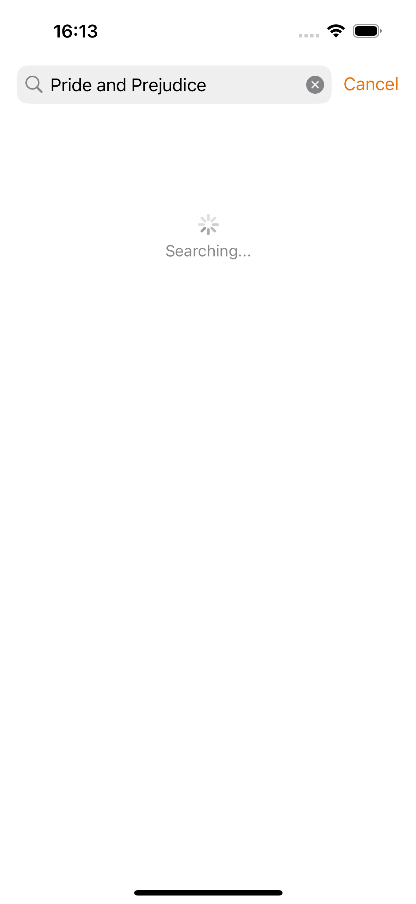
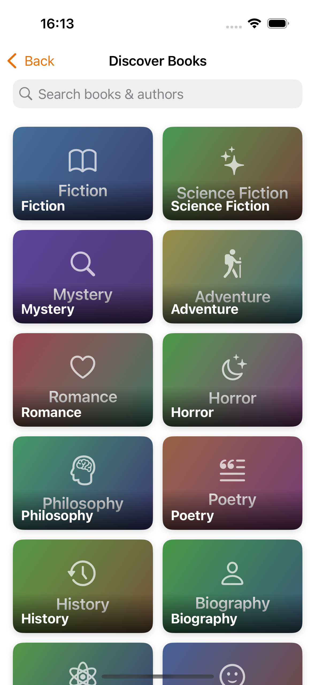

User Guide
BlazeBooks is an iOS EPUB reader with RSVP speed reading and text-to-speech.
📥 Getting Books
You can add books in two ways: import from your own files, or download free titles from the built-in Discover tab.
Import from Files
Tap the + button in the Library to open the file picker. Browse to any .epub file stored in Files, iCloud Drive, or another document provider and select it. The book will be imported and appear in your library straight away.

Download from Discover
Open the Discover tab to browse thousands of free public domain books from Project Gutenberg. Browse by genre or search by title or author, then tap a book to see its details and tap Download.

📚 Your Library
The Library tab shows all your books organised into three sections:
- Continue Reading — a horizontal strip of recently opened books, each with a reading progress bar
- Shelves — collapsible custom shelves for organising your collection
- All Books — a full grid of every imported book, sortable by Title, Author, Recently Read, or Date Added

Organising Books
Long-press any book cover to open a context menu with options to add or remove from a shelf, or delete the book from your library.
Creating Shelves
Tap the shelf icon in the toolbar to create a new shelf. Give it a name — e.g. Science Fiction or Reading List — and books can be assigned via the long-press menu.

📖 Reading Modes
BlazeBooks has two reading modes, switchable at any time. Your position is preserved when you switch.
Page Mode
The default reading experience. Text is displayed as a continuous scroll, chapter by chapter, with comfortable typography — just like any standard ebook reader.
RSVP Mode
Rapid Serial Visual Presentation (RSVP) displays one word at a time in large text, aligned on its Optimal Recognition Point (ORP) — the character your eye naturally focuses on — making it easier to read faster without moving your eyes.
Use the WPM slider to set your reading speed. A good starting point is 250–300 WPM; experienced readers often reach 400–600 WPM.

Switching Modes
Use the Page / RSVP segmented control in the toolbar to switch modes. Your word position is carried across so you continue from exactly where you left off.
🔊 Text-to-Speech
BlazeBooks can read aloud in both Page and RSVP modes using your device's built-in voices.
- Tap the speaker icon in the toolbar to enable TTS
- In Page mode, the currently spoken word is highlighted as playback progresses
- In RSVP mode, TTS advances the word display in sync with speech
Choosing a Voice
Tap the voice name shown below the TTS controls to open the voice picker. Browse and preview all voices installed on your device, grouped by language.
⚡ Speed Controls
WPM Slider
The words-per-minute slider controls reading speed in both RSVP mode (word advance rate) and TTS mode (speech rate). Drag the slider or tap – / + to adjust. Changes take effect immediately.
Speed Cap
Some voices have a natural maximum rate beyond which speech quality degrades. When your WPM setting exceeds a voice's comfort zone, a Speed Cap banner appears. BlazeBooks plays at the highest quality rate for that voice rather than forcing distorted audio.
🔍 Discover Free Books
The Discover tab gives access to over 70,000 free books from Project Gutenberg via the Gutendex API.
- Browse by genre — tap a genre card to see curated titles
- Search — use the search bar to find books by title or author
Tap any result to see the book's description, author, and language. Tap Download to import it directly into your library. Books already in your library show an In Library badge so you don't download duplicates.


☁️ iCloud Sync
BlazeBooks uses iCloud to sync your library, shelves, and reading positions across all your devices signed into the same Apple ID. Sync happens automatically in the background — no setup required.